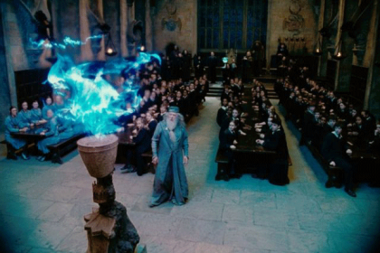
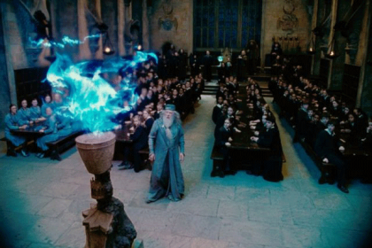
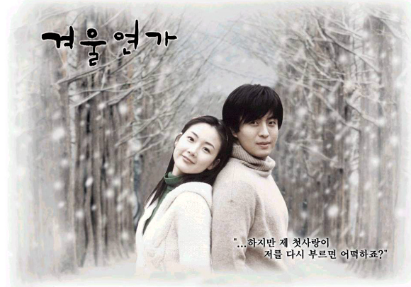
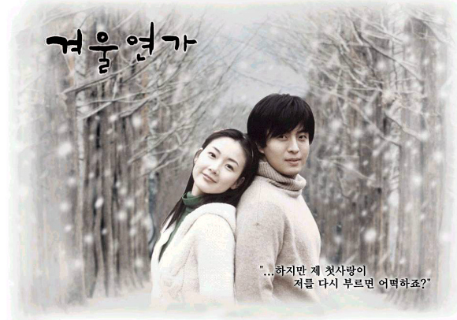
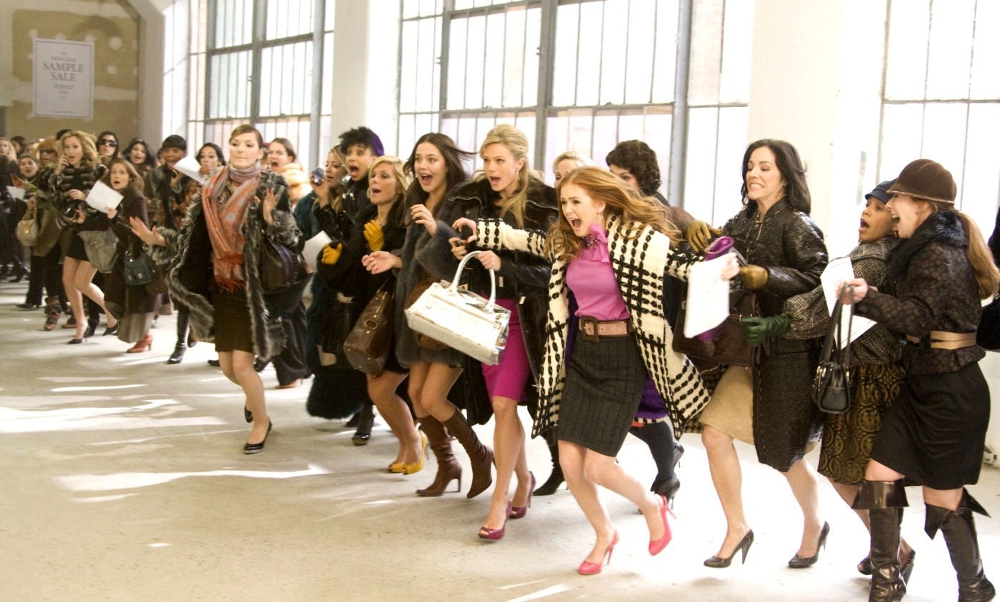
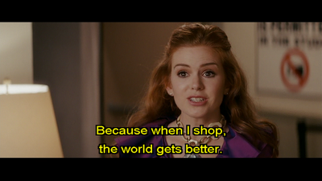

Movies
My lovely movies
Harry Potter

 

Harry Potter and the Goblet of Fire
Genre: Fantasy, Drama, Piece of love , Detective,Adventure
Relase data: 6 November 2005
Storyline:Throughout the three previous novels in the Harry Potter series, the main character, Harry Potter, has struggled with the difficulties of growing up, and the added challenge of being a famed wizard: when Harry was a baby, Lord Voldemort, the most powerful Dark wizard in history, killed Harry's parents but mysteriously vanished after unsuccessfully trying to kill Harry, which left a lightning-shaped scar on Harry's forehead. This results in Harry's immediate fame and his being placed in the care of his abusive muggle, or non-magical, aunt and uncle, Aunt Petunia Dursley and Uncle Vernon Dursley, who have a son named Dudley Dursley.The film opens with Harry seeing Frank Bryce being killed by Lord Voldemort in a vision, and is awoken by his scar hurting. The Weasleys then take Harry and Hermione Granger to the Quidditch World Cup, using a Portkey, to watch Ireland versus Bulgaria, with Ireland emerging victorious. There, Harry meets Cedric Diggory, who is attending the match with his father. After the match, Voldemort's followers attack the site, destroying spectators' tents and wreaking havoc. The Dark Mark gets fired into the sky, which leads to a panic since it is the first time the sign has been seen in 13 years
Director::Mike Newell.
Writers:Steve Kloves and J. K. Rowling.
Stars:Emma Watson, Daniel Redkliff ,Rupert Grint..
Winter Sonata
 

Genre:Drama, Romance,Melodrama.
Relase data:2002.
Storyline:Winter Sonata (Hangul: 겨울연가; RR: Gyeoul Yeonga; also known as Winter Love Story, Winter Love Song or Winter Ballad) is a South Korean television drama series that aired on KBS2 in 2002.The story begins when Joon-sang, the son of an eminent musician, moves to Chuncheon, a rural city in South Korea. As an extraordinarily talented student, Joon-sang is welcomed by his fellow students as well as his teachers, but remains a quiet, introverted teenager. As a result of the belief that his biological father is dead, and serious disagreements with his mother, Joon-sang believes that no one truly loves him.
Director::Yun Seok-ho.
Writers:Kim Eun-hee , Yoon Eun-kyung ,Oh Soo-yeon.
Stars:Bae Yong-joon , Choi Ji-woo.
Shopoholic



Genre: Romantic and Comedy film.
Relaese date: 12 FEBRUARY 2009.
Storyline:Rebecca Bloomwood is a shopping addict who lives with her best friend Suze. She works as a journalist for a gardening magazine but dreams of joining the fashion magazine Alette. On the way to an interview with Alette, she buys a green scarf. Her credit card is declined, so Rebecca goes to a hot dog stand and offers to buy all the hot dogs with a check, if the seller gives her back change in cash, saying the scarf is to be a gift for her sick aunt. The hot dog vendor refuses but a man offers her $20.Rebecca attends Suze's wedding after reclaiming her bridesmaid dress, and Suze forgives her. Walking past a Yves Saint Laurent window, she is tempted to buy a dress, but walks away. Rebecca then runs into Luke who returns the green scarf to her after revealing that the person who bought it at an auction was acting as his agent. Rebecca becomes romantically involved with Luke and starts working at his new company.
Director:P. J. Hogan.
Writer:William Goldenberg.
Stars:Isla Fisher,Hugh Dancy,Krysten Ritter,John Goodman
Home page